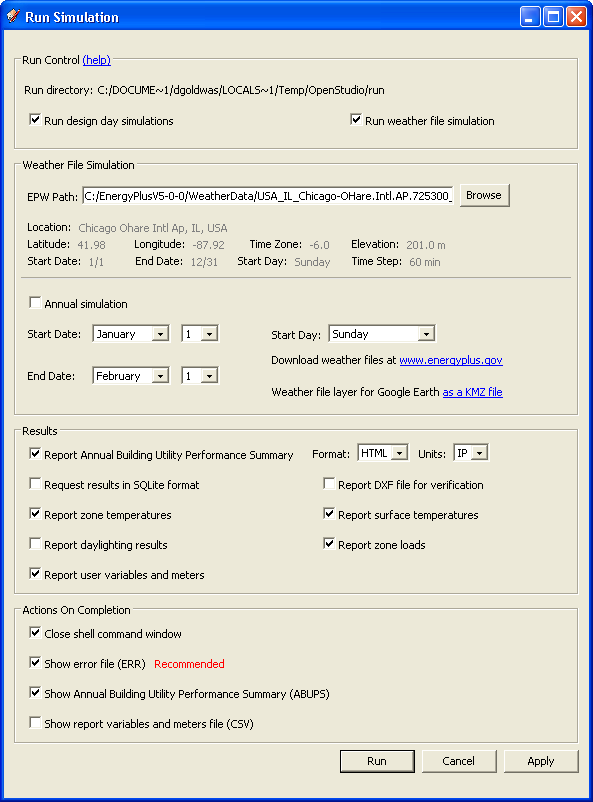
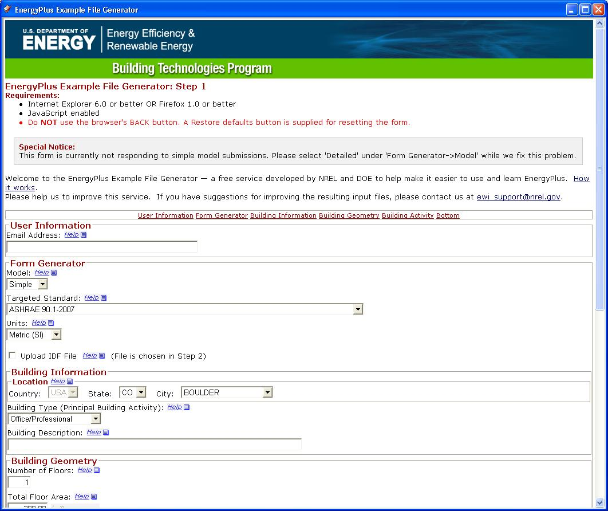

The Run Simulation command displays a dialog window that
enables you to select run control options, select a weather file,
configure run periods, and choose results to be reported. Click on the
Run button to launch a simulation of the current EnergyPlus input file.
The EnergyPlus engine will begin to run in a shell command window. You
may continue to work in SketchUp while the simulation is running. If
you decide not to run the simulation at this time, click on the Apply
button to save your configuration.

(Credit: David Goldwasser/NREL)
Options for run control enable you to choose whether you
want to run design day simulations, weather file simulations, or both.
You can also select the start and end dates for the weather file run
period. Changing these options will update the Run Period object in the
simulated input file.
Options for reporting results enable you to choose the data you want
reported back from the simulation. The Report Annual Building Utility
Performance Summary (ABUPS) option reports a file that provides a
helpful summary of the building energy use over the run period and a
breakdown of end uses. You can choose the format for this report (HTML,
CSV, Tab, orFixed), and the units (SI or IP). The Report User Variables
And Meters option preserves any Output:Variable and Output:Meter
objects already in the input file. If this option is not checked, all
Output:Variable and Output:Meter objects are stripped from the input
file. The Report Zone Temperatures option adds Output:Variable objects
for zone mean air temperature (MAT) and zone mean radiant temperature
(MRT). The Report Inside and Outside Surface Temperatures option adds
Output:Variable objects for all inside and outside surface
temperatures. These might be useful for data visualization studies.
There are also options for various actions that should be performed
when the simulation is complete. The Close Shell Command Window option
will automatically close the shell window (MS-DOS console). If this
option is unchecked, you will have to manually close the window before
you can automatically perform any other actions (e.g., show the error
file). The Show Error File option opens the eplusout.err file in the
preferred text editor. You should always check your ERR file after
every EnergyPlus run. The Show Annual Building Utility
Performance Summary (ABUPS) option opens the ABUPS file for viewing.
The Show Report variables and meters file (CSV) option opens the report
variable output in comma-delimited (CSV) format. If any you select
Output:Variable options, the EnergyPlus output file is postprocessed
into a CSV file whether or not you select the To Show option.
This launches the U.S. Department of Energy's Example
File Generator. This is another method to add data to your IDF file.
This launches as a Web window in SketchUp. After you complete the
process, the sample file will be sent to you via e-mail. (See the
screenshot of the Web site.)

(Credit: David Goldwasser/NREL)